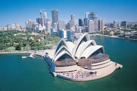

Sidnej je u Australiji isto što i London u Engleskoj i Pariz u Francuskoj. Sidnej je glavni grad države Novi Južni Vels i najprepoznatljiviji grad u Australiji. Osnovan 1788. godine, Sidnej je najstariji grad u Australiji, sa preko četiri miliona stanovnika. Izgrađen je oko jedne od najspektakularnijih luka u svetu i poseduje čuvenu Sidnejsku operu i Sidnejski lučki most, ikone koje predstavljaju Australiju. Sidnej ima reputaciju međunarodnog centra za trgovinu, umetnost, modu, kulturu, zabavu, muziku, obrazovanje i turizam. Ovo je ujedno i najposećeniji grad Australije. Ima mnogobrojne restorane sa odličnom kuhinjom, mesta za kupovinu i veliki izbor smeštaja, od luksuznih hotela do smeštaja za bekpekere. Kada je kupovina u pitanju može se porediti sa Parizom, Rimom i Njujorkom. Sidnej je dom Kraljevskoj nacionalnoj bašti, nacionalnim parkovima, lepim plažama, svetski poznatim muzejima, umetničkim galerijama, kolonijalnoj arhitekturi i istorijskim zgradama. Sidnej nikada ne spava. Tokom dana grad odiše užurbanim životom i uličnim predstavama, dok vas uveče brojni kafići i najsavremeniji klubovi Oksford ulice, mogu zabavljati sve do zore.
Šta posetiti?
Sidnejska opera - Ova raskošna zgrada predstavlja najprepoznatljiviji element Sidneja. Imenovana je za finalistu projekta “Novih sedam svetskih čuda”. Svake godine domaćin za oko 2.400 događaja, Sidnejska opera ostaje jedno od najpoželjnijih mesta za posetu. Zgrada Sidnejske opere je najraskošnija građevina u Australiji, sa izuzetnom akustikom. Kada pomislite na Sidnejsku operu pomislite na besprekoran ukus i originalan dizajn. Razgledajte ovu čudesnu strukturu i uživajte u pogledu na luku.
Bondi Beach (plaža Bondi) - Sidnej i plaža Bondi su nerazdvojivi deo gradskog identiteta. Bondi je možda jedna od najpoznatijih plaža na istočnoj obali Australije. Poznata po svojim umetnicima i prolaznim bekpekerima, Bondi nudi predivan pogled, mekan pesak poput pudera, obilje prodavnica i veliku raznovrsnost restorana.
The Rocks (Roks) - Jedan je od istorijskih i najstarijih regiona u Sidneju. Odiše šarmom prošlih dana, a može se pohvaliti mnogim restoranima i mestima za šoping. Obavezno posetite Roks tržnicu, gde se na više od 150 tezgi nude ručno pravljeni proizvodi i australijske poslastice, kao što su prženi makadamija orasi sa medom, domaći džem i limunada. Jednostavno uživajte u romantičnoj šetnji kroz popločane ulice i uronite u atmosferu prošlih godina.
Sidnejski lučki most - Ovo je poznata znamenitost kojoj ne treba uvod. Most spaja Sidnejski poslovni centar (CBD) sa severnom obalom, a nosi nadimak “the Coathanger” (Vešalica za kaput) zbog svog karakterističnog lučnog izgleda. Pokušajte da se popnete na ovaj poznati most, sve do vrha gde ćete se naći licem u lice sa očaravajućim pogledom na grad i Pacifik. Ali budite oprezni, ova aktivnost nije za ljude sa slabim srcem.
Muzej savremene umetnosti - Ako je umetnost vaša strast, onda Muzej savremene umetnosti mora biti na vrhu vaše liste “šta posetiti u Sidneju”. Kao jedini australijski muzej posvećen izlaganju, interpretaciji i prikupljanju savremene umetnosti iz Australije i celog sveta, ima stalnu postavku impresivne kolekcije, koja će zadovoljiti čak i najizbirljivije posetioce.
Sidnejski toranj - Uputite se u centar Sidneja i pripremite se za vertikalno putovanje do vrha Sidnejskog tornja. Možete ručati u najvišem pokretnom restoranu u Australiji ili ukoliko ste hrabri otići do Skywalk (vidikovac na vrhu tornja) - najveće atrakcije na otvorenom u Sidneju, koja se nalazi 260 metara iznad zemlje. Obucite kombinezon, stavite sigurnosnu opremu, a zatim izađite na staklenu platformu, gde ćete se suočiti sa pogledom na grad od 360 stepeni. Ovo možda zvuči zastrašujuće, ali nemate zašto da brinete – Sidnejski toranj je rangiran kao jedan od najbezbednijih objekata u svetu.